Рибби и Крокc (англ. Ribby and Croaks) — двойной босс из игры Cuphead, который появляется на уровне «Зажимающее бедствие» на Чернильном острове один. Несмотря на то, что их двое, их здоровье является общим.
Описание[]
Внешний вид[]
Рибби[]
Рибби выгладит как салатовая лягушка в красных боксёрских перчатках. На нём одеты белые штаны с красным поясом. Его живот и губы светло-жёлтого цвета. Над глазами имеет коричневые брови.
Крокс[]
Крокс выглядит как лягушка болотного цвета с коричневыми боксёрскими перчатками. Ростом он заметно выше чем Рибби. Одет в красные штаны с коричневым поясом. Его живот и губы бежевого цвета. Над глазами имеет коричневые брови.
На последней фазе Крокс проглатывает Рибби и они превращаются в игровой автомат жёлто-коричневого цвета.
Личность[]
Рибби[]
Согласно The Art of Cuphead, Рибби — хулиган из лучших побуждений, пусть иногда и чрезмерно храбрый, но с золотым сердцем. Судя по всему, он вырос в плохих условиях, чем, тем не менее, хвастается на экране смерти. Учитывая это, и то, что Рибби плачет после поражения в простом режиме, он может быть просто болезненным неудачником и слабаком. Также Рибби готов, кажется, пожертвовать собой, чтобы сделать Крокса сильнее. В отличие от других предполагаемых братьев — Леденцовых Упырей, Рибби и Крокс получают общий урон, что подчёркивает их единство.
Крокс[]
Крокс в целом идентичен Рибби, но судя по его поведению после поражения в простом режиме, он настолько сильно воспринимает свое поражение, что впадает в ярость. В его экране смерти третьей фазы он, вероятно, дразнит Капхеда и Магмена, намекая на их проигрыш Дьяволу.
В бою[]
Фаза 1[]
| У нас были боевые души, когда мы были ещё маленькими головастиками. |
| — Рибби и Крокc, экран смерти при первой фазе |
В первой фазе Рибби и Крокc атакуют игроков по заданной схеме, которую многие игроки могут запомнить и избежать потери здоровья:
- Крокc будет плеваться светлячками, которые будут медленно двигаться к игроку. Их также просто убить.
- Рибби будет бросать боксёрские перчатки в игрока в заданном порядке: один близко к земле, другой немного выше от земли и один высоко от земли. Некоторые перчатки будут розовыми (их можно парировать).
После получения достаточного количества урона, Рибби покатится на другую сторону, пытаясь нанести урон игроку, после чего начинается вторая фаза.
Фаза 2[]
| Неприятные и плохие, потому что мы с неблагополучной стороны лилии. |
| — Рибби и Крокc, экран смерти при второй фазе |
В этой фазе игрок находится между двумя боссами. Они теперь атакуют одновременно, хотя и атака Крокcа будет длиться немного дольше.
- Рибби будет бросать мячи, которые будут отскакивать от пола и потолка. Бросить мяч он может как и вверх, так и вниз. В простом и экспертном режимах Рибби также может использовать боксёрские перчатки для атаки, как в первой фазе.
- Крокc будет вертеться как вентилятор, пытаясь сдвинуть игрока.
После принятия достаточно повреждений, Крокc открывает рот, после чего Рибби катится в него, пытаясь нанести урон игроку. После этого, Крокc и Рибби становятся игровым автоматом.
Если игрок играет на простом уровне сложности, то битва просто закончится.
Фаза 3[]
| Ты поставил всё и теперь ты квакнулся. |
| — Рибби и Крокc, экран смерти при третьей фазе |
После того, как начнётся третья фаза, игровой автомат будет выстреливать монетами в игрока, пытаясь нанести урон. Также в этой фазе игрок не может просто так повредить Крокcа. Для того, чтобы нанести боссу урон, необходимо парировать рычаг, который будет опущен спустя некоторое время.
После того, как рычаг был задет, «автомат» будет вращаться до тех пор, пока не совпадут три символа, после чего босс будет уязвим для атак, но при этом сам начнёт атаковать гораздо сильнее.
В зависимости от комбинации можно увидеть следующие варианты атак:
- Тигры: Оранжевые платформы, которые выпускают оранжевые мячи. Для того, чтобы не получить урон, достаточно уворачиваться от них.
- Змеи: Зелёные платформы, которые быстро движутся и по которым надо прыгать, чтобы не получить урон.
- Быки: Красные платформы, которые летят по середине экрана. Чтобы не получить урон, нужно вовремя увидеть, что нужно делать — перепрыгивать платформу или пройти под нею.
Звуки[]
| развернутьЗвуки |
|---|
Галерея[]
")
")
.gif "Imageproxy (4).gif (849 Кб)") 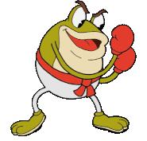
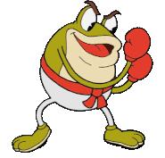.gif "Imageproxy (2).gif (1,15 Мб)") 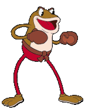
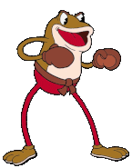") 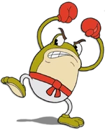
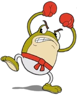")
") 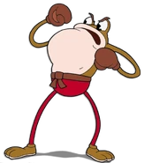
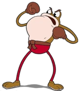") 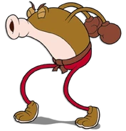
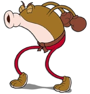") 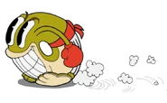
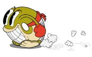") 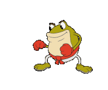
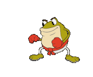")
")
") 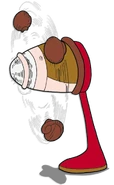
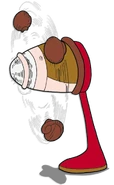") 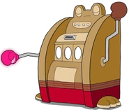
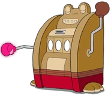") 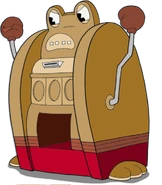
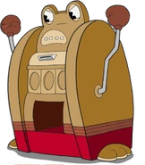") 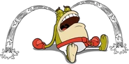
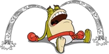") 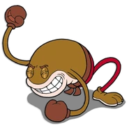
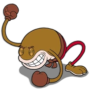") 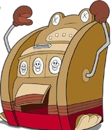
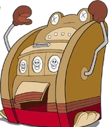")
") 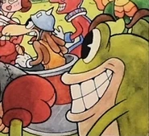
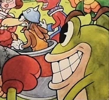")
") 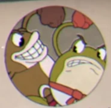
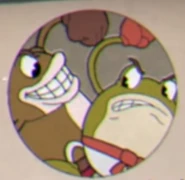") 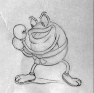
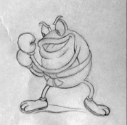") 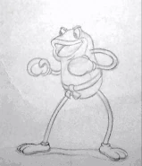
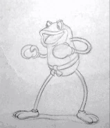")
Интересные факты[]
- Если игрок умрёт во время того как Рибби и Крокс переходят в третью фазу, будет виден экран смерти третьей фазы.
- Из двух лягушек только Рибби появлялся в хорошей концовке.
- В битве с Рибби и Кроксом есть много отсылок на игру Street Fighter.
- Рибби и Крокс — единственный двойной босс с общим здоровьем (даже если стрелять только в одного из них, то урон будет наноситься обоим).

Комментариев: 13
У нас были боевые души, когда мы были ещё маленькими головастиками
У меня при поражении на первой фазе было "У нас с братом чёрный пояс по ква-рате"
В простом и экспертном режимах Рибби также может использовать боксёрские перчатки для атаки, как в первой фазе.
Ну не знаю! Я когда сражался с ним, перчатками атаковал он только в экспертном режиме.
Если бы это была гачи-версия, то битва была по особенно мужской)))
Интересно то что толстый рибби проник в рот который меньше его крокса.
Когда пересмотрел Форсаж.
Когда бежишь домой из школы в пятницу
быки самые сложные
А для меня сложное это кошки(тигры)
Я один над ними пол дня страдал?(из за вечно выпадающей тигрули в автомате)
Нет, тигруха реально сложная, и помню она мне выпала 5 раз подряд))
А тигры-это выпригывающие шары?
Блин, Фроггитов из Undertale напомнили)
Блет там ЗМЕИ!!!
@Sanic228 Где ты Змей увидел?
@REEEEEEEEECLAS
Присмотрись!!!
ВОТ! Ну здесь же видно что это змеи!
Когда переиграл в Undertale , и тут вылазит Дьявол с Чарой на одном троне :
А контрактики на Санса? Души? Какие души? КОНТРАКТИКИ!
Боевые , а в когда побеждены в простом режиме ноют. Логика! Где логика? А зачем нам Логика!
Логика здесь, подышать вышла!
Это для них позор, что какая-то чашка смогла их одолеть!
чёт сразу вспомнилась игруха Battle Toads когда увидел их
Я тоже вспомнил.
Для меня было большое открытие, когда я узнал, что это змеи. Мне эти картинки всегда виделись лягушками.
Мне тоже
и мне
Бычки на ред булл похожи
Быки? Я думал, что там изображён дьявол.